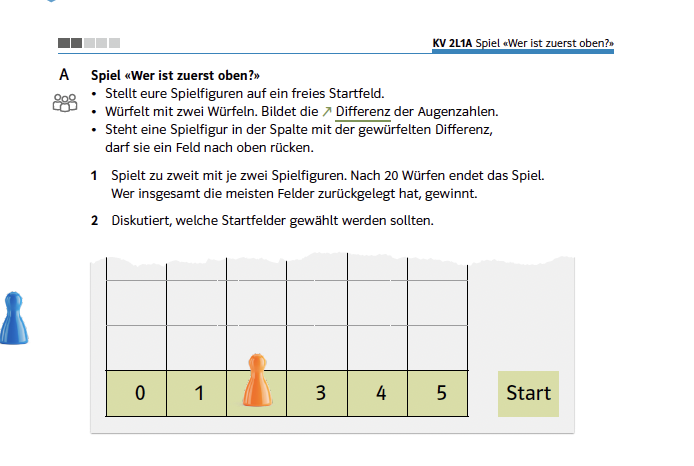
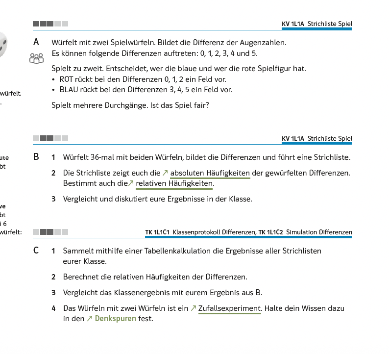
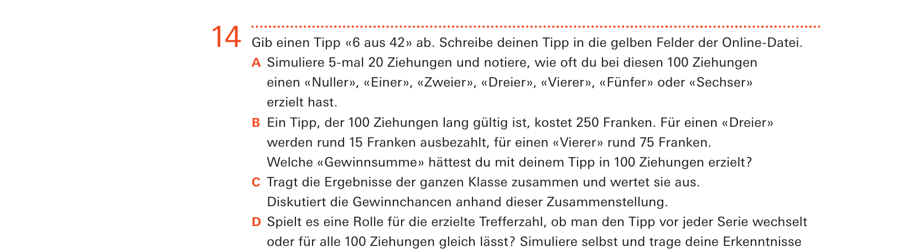
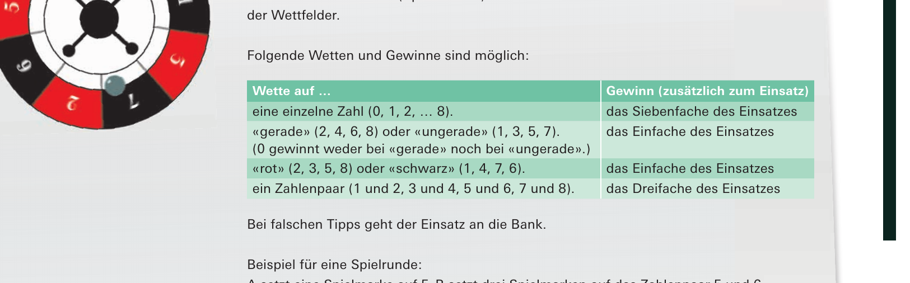
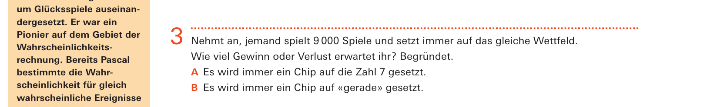

Bezug zur SchulpraxisDie Differenz zweier Augenzahlen

Quelle: Mathbuch 2 (überarbeitete Ausgabe), Aufgabe 2L1 A, S. 66
Zufallsgrösse, Erwartungswert, Varianz – keiner dieser Begriffe wird in der Sekundarstufe I eingeführt. Wohl aber Mittelwert und Median: Beide sind im Mathbuch Fachbegriffe, werden im Register geführt, in der Randspalte erläutert, und die Lernenden sollen ihr Wissen dazu in den Denkspuren festhalten.
Kennzahlen einer Verteilung haben also durchaus einen Namen – nur gelten die Namen für Daten und nicht für Zufallsgrössen. Wie nah beides beieinanderliegt, lässt sich an einer einzigen Aufgabe zeigen. Das Mathbuch eröffnet sein Kapitel damit:
Halten Sie hier kurz inne. Welche Startfelder würden Sie wählen – und welche Überlegung liegt Ihrer Antwort zugrunde?
Die Zufallsgrösse
Gewürfelt wird mit zwei Würfeln, aber gespielt wird mit der Differenz. Jedem der $36$ Ergebnisse wird also eine Zahl zwischen $0$ und $5$ zugeordnet – das ist eine Zufallsgrösse, und der Spielplan mit seinen sechs Spalten ist nichts anderes als ihr Wertebereich. Ihre Verteilung lässt sich auszählen:
| Differenz | $0$ | $1$ | $2$ | $3$ | $4$ | $5$ |
| Anzahl Ergebnisse | $6$ | $10$ | $8$ | $6$ | $4$ | $2$ |
Damit ist die Frage nach den Startfeldern beantwortbar: Feld $1$ wird am häufigsten getroffen, Feld $5$ am seltensten.
Die Differenz ist dabei kein Einzelfall. Zufallsgrössen sind in den Lehrmitteln allgegenwärtig, nur heissen sie nirgends so: die Flugweite einer zerknüllten Papierkugel, die Anzahl richtig getippter Zahlen beim Minilotto, die Trefferzahl beim Lotto, die Wurfposition eines unregelmässigen Körpers. Und was in den Aufgaben jeweils entsteht – ein Säulendiagramm über den möglichen Werten – ist ein Histogramm, auch wenn das Wort nicht fällt.

Quelle: Mathbuch 1 (überarbeitete Ausgabe), Aufgabe L1, S. 66

Quelle: mathbu.ch 3, LU 18, Aufgabe 14, S. 61
Der Erwartungswert
Nun ist die naheliegende Kennzahl einer Verteilung ihr Erwartungswert, und der beträgt hier $\tfrac{70}{36} \approx 1{,}94$. Gerechnet wird er wie ein Mittelwert – nur nicht über gemessene Werte, sondern über die möglichen, gewichtet mit ihren Wahrscheinlichkeiten. Wer daraufhin auf Feld $2$ setzt, hat sauber gerechnet und trotzdem falsch gewählt.
Wozu der Erwartungswert dann taugt, zeigt dieselbe Aufgabe ein Jahr früher: Dort steht dasselbe Spiel in einer einfacheren Fassung.
Gefragt wird dort nicht nach Startfeldern, sondern: Ist das Spiel fair? Das ist die Erwartungswertfrage – nur wird sie empirisch beantwortet, mit $36$ Würfen, einer Strichliste und den Klassendaten. Dass Rot häufiger vorrückt, wird beobachtet, nicht gerechnet.
Damit steht die Sache bereits im ersten Jahr, und zwar auf dem Weg des Kapitels über den statistischen Wahrscheinlichkeitsbegriff. Was das Kapitel über Zufallsgrössen hinzufügt, ist die Möglichkeit, dieselbe Frage vorher zu beantworten.
Wozu er sonst noch taugt, zeigt eine Aufgabe zum Swisslotto:
Teilaufgabe B nennt konkrete Beträge: Ein Tipp, der hundert Ziehungen lang gültig ist, kostet $250$ Franken für einen Dreier werden rund $15$ Franken ausbezahlt, für einen Vierer rund $75$. Die Klasse ermittelt daraus eine Zahl – diejenige, die ihr simulierter Tipp gerade hergegeben hat.
Was auf lange Sicht herauskommt, lässt sich rechnen. Bei sechs aus zweiundvierzig Zahlen ist \[ P(\text{Dreier}) = \frac{\binom{6}{3}\binom{36}{3}}{\binom{42}{6}} \approx 0{,}027, \qquad P(\text{Vierer}) = \frac{\binom{6}{4}\binom{36}{2}}{\binom{42}{6}} \approx 0{,}0018 , \] macht rund $54$ Franken erwarteten Gewinn gegenüber $250$ Franken Einsatz. Diese Rechnung ist Ihre und nicht die der Klasse – sie braucht Binomialkoeffizienten, über die die Lernenden nicht verfügen. Was sie leistet, ist ein Urteil, das nicht vom Glück des Simulationslaufs abhängt.

Quelle: mathbu.ch 3, LU 18, S. 58

Quelle: mathbu.ch 3, LU 18, Aufgabe 3, S. 58
Die Streuung
Bleibt die dritte Kennzahl. Auch für sie lässt die Aufgabe Raum: Man spielt mit zwei Figuren, und wer die Felder $1$ und $2$ besetzt, wählt anders als jemand mit den Feldern $1$ und $4$. Nach zwanzig Würfen entscheidet nicht nur der Erwartungswert, sondern auch, wie stark das Ergebnis um ihn schwankt.
Anderswo entscheidet sie alles. In einer Lernumgebung zum Roulette wird ein Miniroulette mit neun Zahlen gespielt:
Und dazu die folgende Aufgabe:
Die Aufteilung in zwei Teilaufgaben legt einen Unterschied nahe. Es gibt keinen: Alle vier Wettarten haben denselben Erwartungswert von $-\tfrac{1}{9}$ pro Einsatz.
Die Protokolle, die die Lernumgebung ohnehin führen lässt, zeigen das unmittelbar, sobald man sie nebeneinanderlegt: wilde Zacken mit seltenen hohen Ausschlägen bei den Zahlwetten, ein ruhig absinkender Verlauf bei den Farbwetten. Benennen lässt sich der Unterschied mit den Mitteln des Lehrmittels nicht – erzeugen schon.
Fazit
Die Begriffe dieses Kapitels werden Sie in der Sekundarstufe I nicht einführen. Drei Dinge brauchen Sie trotzdem.
Erstens den Blick dafür, dass hinter einer Spielregel eine Zufallsgrösse steckt. Wer sieht, dass der Spielplan des Differenzenspiels ein Wertebereich ist, kann die Frage nach den Startfeldern beantworten, statt sie ausspielen zu lassen.
Zweitens das Wissen, dass eine Verteilung mehrere Kennzahlen hat und dass die Frage entscheidet, welche gemeint ist. Der Erwartungswert beantwortet die Fairnessfrage nach dem besten Startfeld gefragt, führt er in die Irre. Beide Fragen stehen im Lehrmittel, ein Jahr auseinander.
Und drittens die Fähigkeit, Streuung zu erkennen, wo sie nicht benannt wird. Wenn zwei Gruppen mit demselben mittleren Verlust völlig verschiedene Spielverläufe erleben, ist das kein Zufall des Nachmittags, sondern eine Eigenschaft der Verteilung – und Sie sind die einzige Person im Raum, die das weiss.